Cookbook de Autenticação e Uso da API
A plataforma usa dois serviços independentes. O Auth Service gerencia tenants, usuários e emite tokens JWT. O Chat Service gerencia conversas, mensagens e file upload, protegido por JWT.
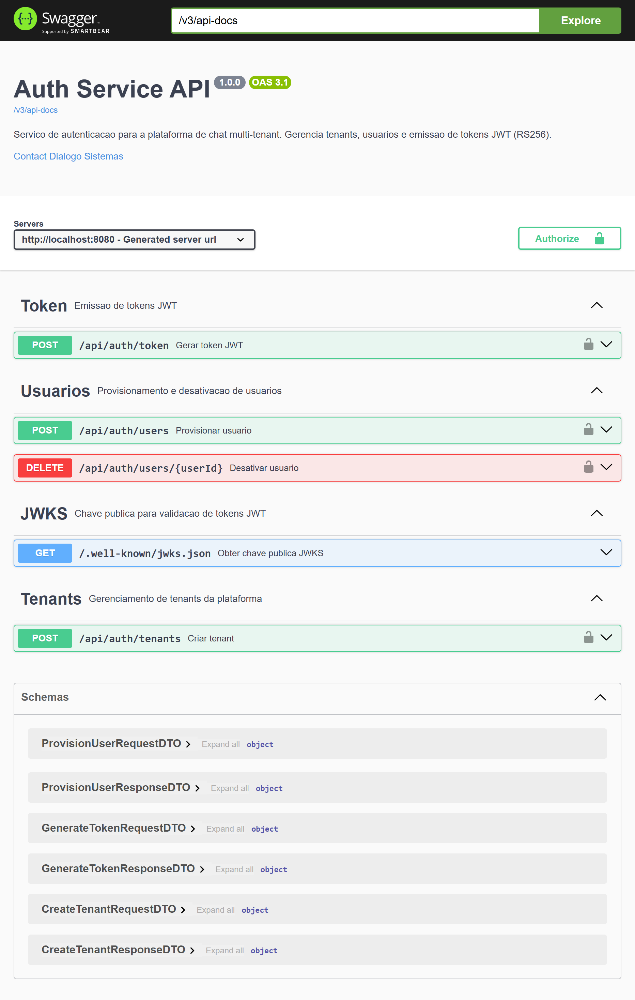
Acesse o Swagger do Auth Service em http://localhost:8080/swagger-ui/index.html. Clique em Authorize e preencha o campo masterKey com a chave master do sistema.
X-Master-Key → valor definido na variável de ambiente AUTH_MASTER_KEY
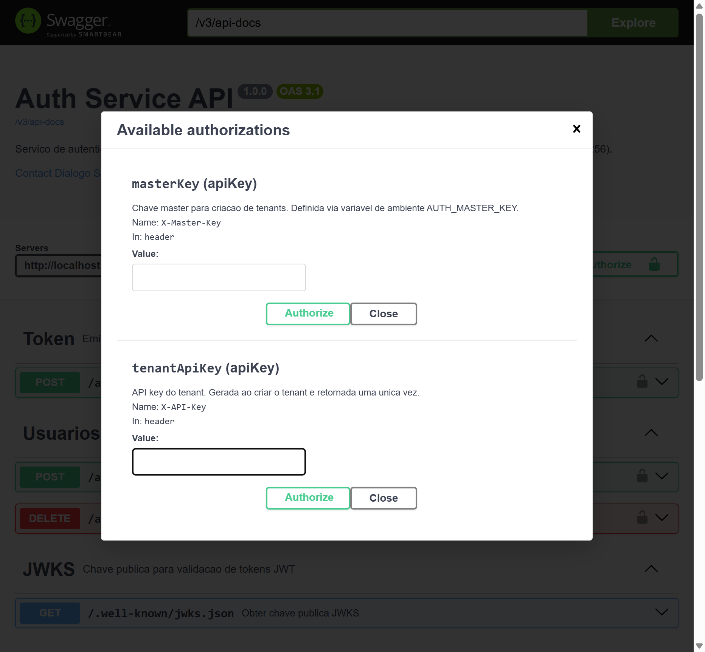
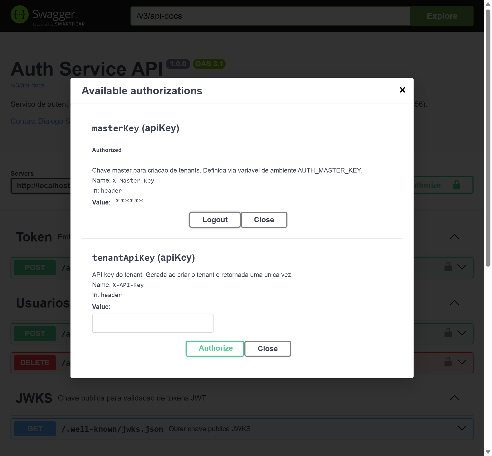
{
"name": "SESI Nacional"
}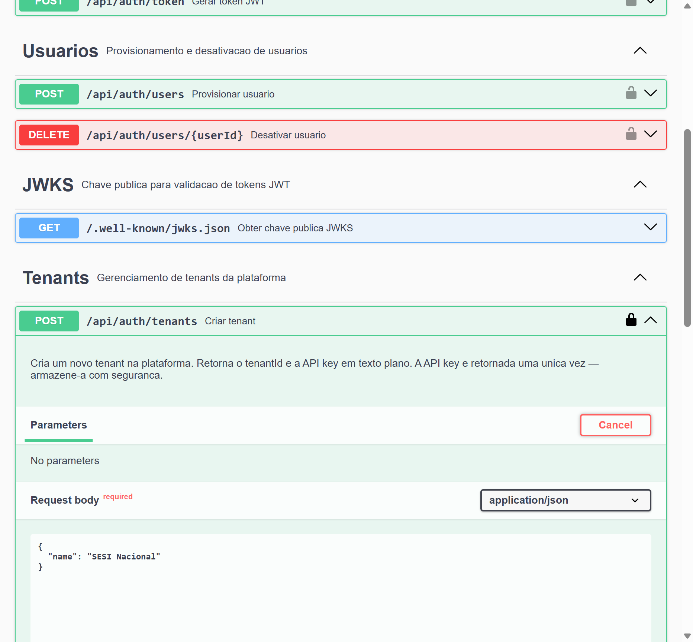
{
"tenantId": "07a0a59c-c578-4325-bb78-d1fbd01cc655",
"apiKey": "iWw4AzF6XscuCvp4c0iyvBb3MicX3UlfD2jIGPVi3_U"
}apiKey é exibida uma única vez. Armazene-a com segurança — ela será usada em todos os próximos passos.
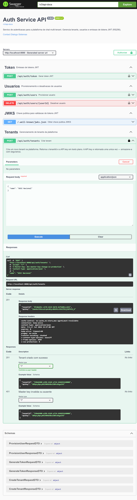
Clique em Authorize novamente e preencha o campo tenantApiKey com a apiKey obtida no passo anterior.
X-API-Key → a API key retornada ao criar o tenant
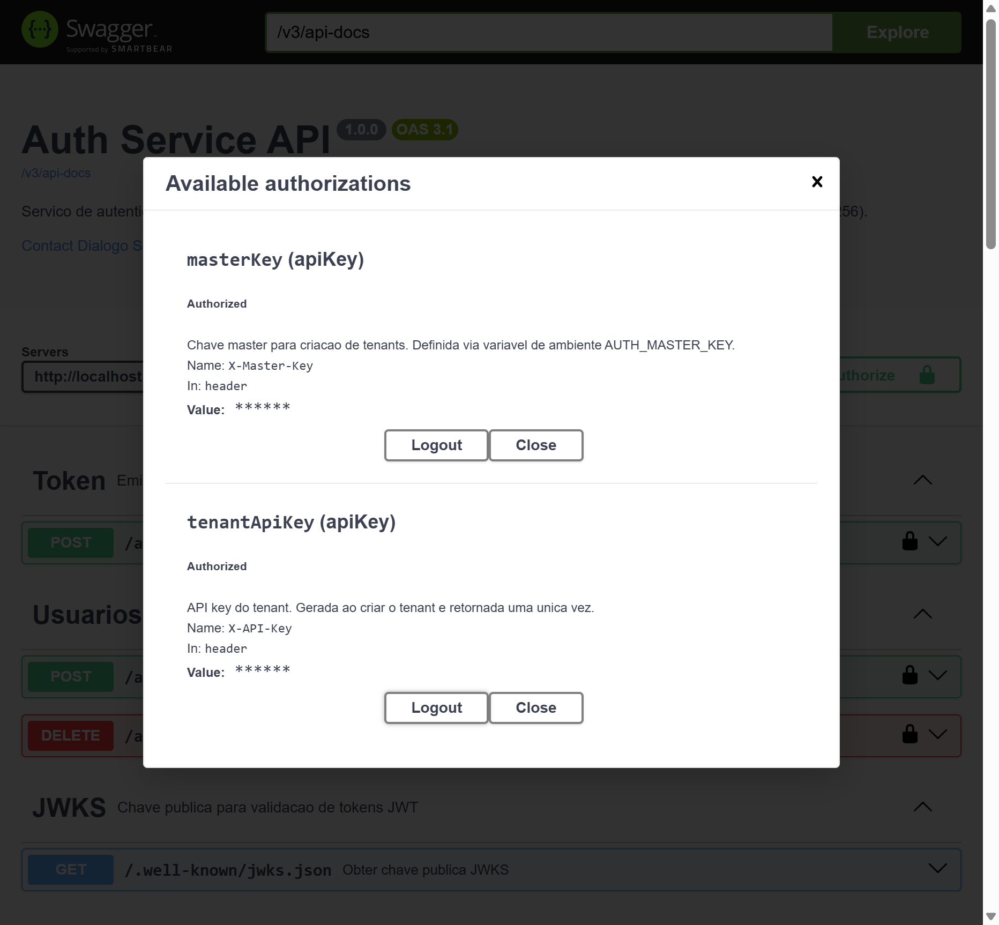
{
"externalId": "prof-123",
"name": "Mayara Amorim",
"email": "mayara@sesi.org.br",
"role": "MEDIADOR"
}MEDIADOR e USUARIO_COMUM. Se o externalId já existir para o tenant, a chamada atualiza os dados (upsert).
{
"userId": "e0ba2dec-ae18-4e1f-bbe1-d23056051ba3",
"externalId": "prof-123"
}
{
"externalId": "aluno-456",
"name": "João Silva",
"email": "joao@sesi.org.br",
"role": "USUARIO_COMUM"
}{
"userId": "c3f55499-505f-456d-969b-d8a3dd0ea51a",
"externalId": "aluno-456"
}O token é gerado a partir do externalId do usuário, não do userId.
{
"externalId": "prof-123"
}{
"accessToken": "eyJraWQiOiJhdXRoLXNlcnZpY2Uta2V5...",
"expiresIn": 86400
}sub (userId), tenant_id, name, role.

Acesse o Swagger do Chat Service em http://localhost:8081/swagger-ui/index.html. Clique em Authorize e cole o accessToken no campo bearerJwt.
Authorization → Bearer <accessToken>
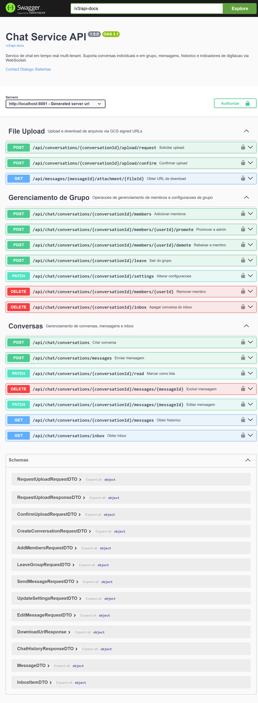
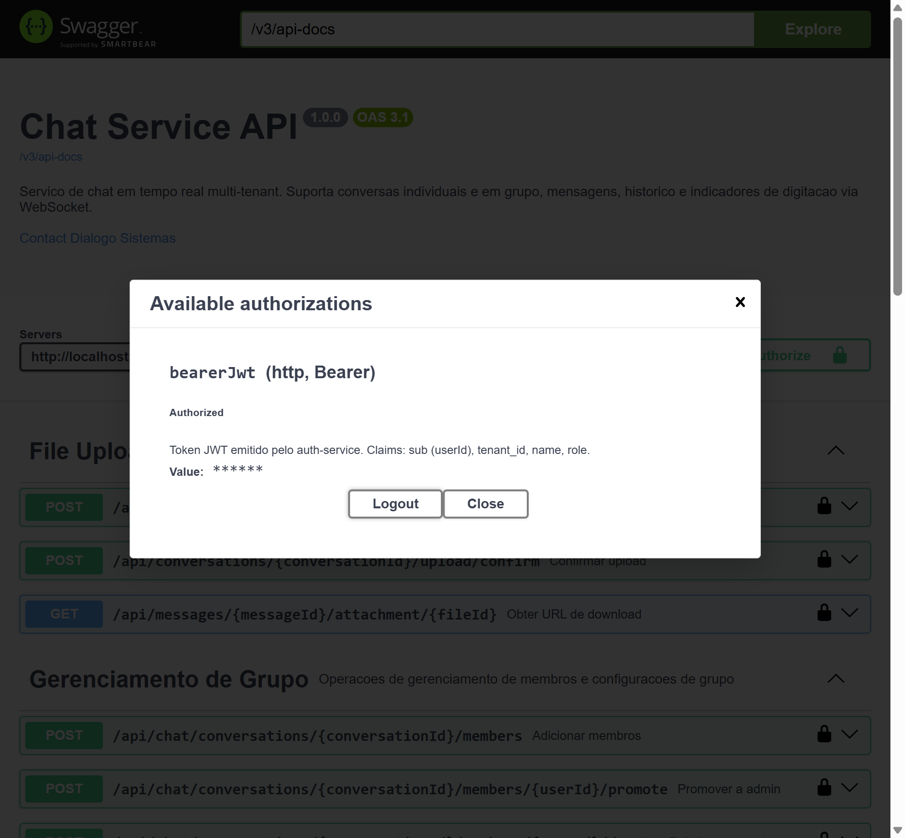
Authorization.
{
"type": "INDIVIDUAL",
"title": null,
"description": null,
"participants": [
"e0ba2dec-ae18-4e1f-bbe1-d23056051ba3",
"c3f55499-505f-456d-969b-d8a3dd0ea51a"
]
}userId retornados no Passo 2. Para conversas INDIVIDUAL, exatamente 2 participantes. Para GROUP, inclua title e mais participantes.
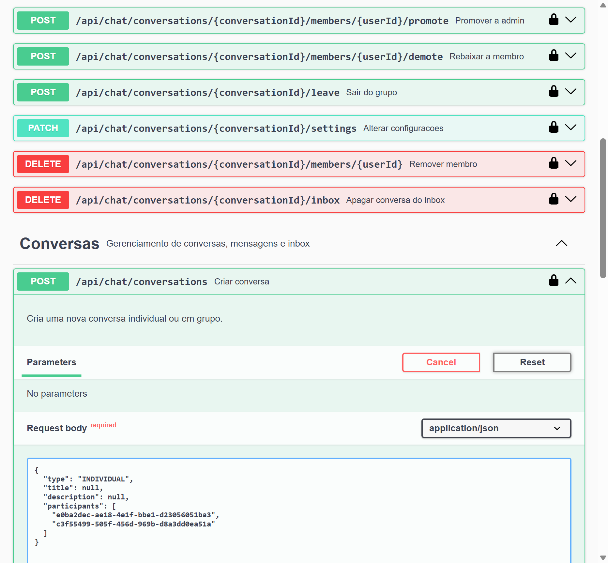
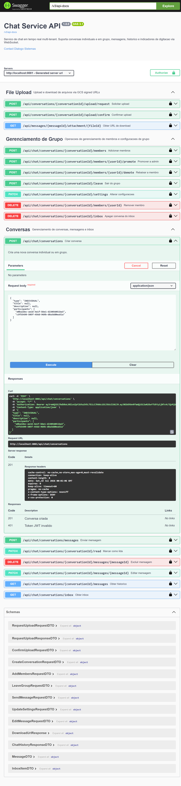
O endpoint de criar conversa não retorna body. Use o Inbox para obter o conversationId.
[
{
"conversationId": "ed9af3ff-fe06-4b08-b24a-c719a21884e6",
"title": null,
"lastMessagePreview": null,
"lastMessageAt": null,
"unreadCount": 0,
"readOnly": false
}
]
{
"conversationId": "ed9af3ff-fe06-4b08-b24a-c719a21884e6",
"content": "Olá, tudo bem? Esta é a primeira mensagem!"
}Retorna sem body. A mensagem é distribuída via Kafka e WebSocket para os participantes.

| Ação | Endpoint | Descrição |
|---|---|---|
| Ver inbox | GET /api/chat/conversations/inbox |
Lista conversas com preview e contagem de não lidas |
| Ver histórico | GET /api/chat/conversations/{id}/messages?cursor=... |
Histórico (mais antigas), paginação por cursor para trás |
| Sincronizar novas | GET /api/chat/conversations/{id}/messages?after=... |
Mensagens que chegaram depois do cursor (sync ao reconectar) |
| Marcar como lida | PATCH /api/chat/conversations/{id}/read |
Marca todas as mensagens como lidas |
| Editar mensagem | PATCH /api/chat/conversations/{id}/messages/{msgId} |
Apenas o autor pode editar |
| Excluir mensagem | DELETE /api/chat/conversations/{id}/messages/{msgId} |
Soft-delete; admins podem excluir qualquer mensagem |
| Upload de arquivo | POST /api/conversations/{id}/upload/request |
Solicita signed URL para upload direto ao GCS |
| Confirmar upload | POST /api/conversations/{id}/upload/confirm |
Cria mensagem com attachment após upload ao GCS |
cursor vs. after)
O mesmo endpoint GET /{id}/messages serve dois objetivos, controlados por
parâmetros mutuamente exclusivos:
| Parâmetro | Direção | Uso |
|---|---|---|
cursor |
Para trás (mais antigas) | Rolar o histórico da conversa. Sem parâmetro = página mais recente. |
after |
Para frente (mais novas) | Ao reconectar o WebSocket, buscar o que chegou enquanto o cliente esteve offline. |
Fluxo de resiliência: a entrega em tempo real (Kafka → WebSocket) é
best-effort. A garantia de que nenhuma mensagem se perde vem do banco: o cliente guarda o
cursor da última mensagem recebida (campo nextCursor da resposta) e, ao
(re)conectar, chama ?after=<cursor> antes de confiar no tempo real.
Isso recupera tanto um evento que o Kafka não publicou quanto uma entrega de WebSocket que
caiu. Ambos os parâmetros retornam { "messages": [...], "nextCursor": "..." }.
Fora do fluxo dos passos acima existem duas operações administrativas, esta e a próxima.
Ambas usam a X-Master-Key, a mesma do Passo 1 — não a X-API-Key do tenant.
Retorna ativos e inativos, dos mais recentes para os mais antigos. Existe porque a criação
devolve o tenantId uma única vez: sem listagem, um tenant cujo ID
se perdeu ficaria inalcançável para desativação.
| Parâmetro | Padrão | Observação |
|---|---|---|
page | 0 | índice base zero |
size | 50 | teto de 200; acima disso retorna 400 |
[
{
"tenantId": "07a0a59c-c578-4325-bb78-d1fbd01cc655",
"name": "SESI Nacional",
"active": true,
"createdAt": "2026-07-29T12:00:00Z"
}
]X-Master-Key → valor definido na variável de ambiente AUTH_MASTER_KEY
Sem corpo. A partir daí, a apiKey daquele tenant passa a receber 401.
tenantId é referenciado por usuários no auth-service e por conversas no
chat-service — apagar a linha deixaria esses dados órfãos. O que muda é o efeito prático:
o filtro de autenticação recusa qualquer requisição de tenant inativo.
204,
não erro. Quem limpa ambiente costuma repetir o comando, e falhar na segunda chamada
obrigaria o chamador a tratar um caso sem consequência.
| Código | Quando |
|---|---|
401 | X-Master-Key ausente ou inválida |
404 | tenantId não existe |
Alguns endpoints têm limite de frequência, para conter abuso e custo — os que geram URLs
assinadas no GCS, o que emite tokens JWT e o de envio de mensagem. Ao exceder, a API responde
429 Too Many Requests com o header Retry-After, cujo valor é
o número de segundos até a cota liberar.
| Serviço | Endpoint | Limite | Contado por |
|---|---|---|---|
| Chat | POST /api/conversations/{conversationId}/upload/request |
30/min | usuário |
| Chat | POST /api/conversations/{conversationId}/upload/confirm |
30/min | usuário |
| Chat | GET /api/messages/{messageId}/attachment/{fileId} |
30/min | usuário |
| Chat | POST /api/chat/conversations/messages |
60/min | usuário |
| Auth | POST /api/auth/token |
10/min | API key do tenant |
O POST /api/auth/token é contado por API key, e não por usuário,
porque nesse ponto ainda não existe usuário autenticado — o token está sendo emitido
justamente ali. Quem responde pelo consumo é o tenant dono da chave.
HTTP/1.1 429 Too Many Requests
Retry-After: 42
Como tratar no cliente: espere os segundos indicados em
Retry-After antes de repetir. Não tente de novo imediatamente e não use
backoff fixo próprio — o valor devolvido é o tempo real que falta na janela.
A janela é fixa, não deslizante: o contador começa na primeira chamada e zera ao fim do minuto. Na virada de duas janelas adjacentes é possível passar até o dobro do limite num intervalo curto. Isso é aceito de propósito — o objetivo é conter abuso e custo, não dosar tráfego com precisão.
| Serviço | Operação | Header | Valor |
|---|---|---|---|
| Auth | Criar tenant | X-Master-Key |
Master key do sistema |
| Auth | Criar usuários | X-API-Key |
API key do tenant |
| Auth | Gerar token | X-API-Key |
API key do tenant |
| Chat | Todos os endpoints | Authorization |
Bearer <accessToken> |
Este capítulo documenta toda a jornada de criação da pipeline de deploy — desde a escolha da arquitetura, passando pela criação dos Dockerfiles e do cloudbuild.yaml, até a configuração dos triggers e o primeiro deploy funcionando. Cada decisão é explicada.
Para um projeto com dois microserviços Spring Boot, precisávamos de uma plataforma que:
| Requisito | Alternativas descartadas | Cloud Run resolve |
|---|---|---|
| Custo zero quando sem tráfego | GKE (cluster sempre ligado), Compute Engine (VM fixa) | Escala a zero — paga só quando recebe requisição |
| Deploy simples (sem Kubernetes) | GKE (manifests YAML, Helm charts) | Uma imagem Docker = um deploy, sem orquestração |
| HTTPS automático | Compute Engine (config manual de cert) | TLS grátis em toda URL *.run.app |
| CI/CD nativo no GCP | GitHub Actions (funciona, mas fora do ecossistema GCP) | Cloud Build integrado, trigger direto no push |
Se ainda não tem um projeto GCP, crie um. O projeto é o "container" de tudo no GCP — billing, APIs, serviços, permissões.
# Criar o projeto (o ID precisa ser único globalmente)
gcloud projects create chat-enterprise-dev --name="Chat Enterprise DEV"
# Vincular billing (obrigatório para usar qualquer API paga)
# Faça pelo console: https://console.cloud.google.com/billingO gcloud suporta múltiplas configurações (profiles). Útil quando você tem projetos do trabalho e pessoais na mesma máquina.
# Criar uma configuração nomeada para este projeto
gcloud config configurations create config-chat-enterprise
# Setar conta e projeto
gcloud config set account moreiraamorim.business@gmail.com
gcloud config set project chat-enterprise-dev
# Trocar entre configurações
gcloud config configurations activate config-chat-enterprise
# Ver todas as configurações
gcloud config configurations listgcloud config guarda conta, projeto e região separadamente. Use activate para trocar.
Cada serviço do GCP precisa ser habilitado explicitamente. São 4 APIs:
gcloud services enable \
cloudbuild.googleapis.com \
artifactregistry.googleapis.com \
run.googleapis.com \
secretmanager.googleapis.com \
--project=chat-enterprise-dev| API | Para quê |
|---|---|
cloudbuild |
CI/CD — compila e deploya a cada push |
artifactregistry |
Registry privado de imagens Docker |
run |
Hospedagem serverless dos containers |
secretmanager |
Armazena secrets (senhas, chaves RSA, configs do Kafka). Também usado internamente pelo Cloud Build para guardar o token OAuth do GitHub |
O Artifact Registry é onde as imagens Docker ficam armazenadas. Precisa ser criado antes do primeiro build.
gcloud artifacts repositories create chat-platform \
--repository-format=docker \
--location=us-central1 \
--description="Imagens Docker do Chat Platform"us-central1? Mesma região do Cloud Run — o pull da imagem é mais rápido e sem custo de egress entre regiões.
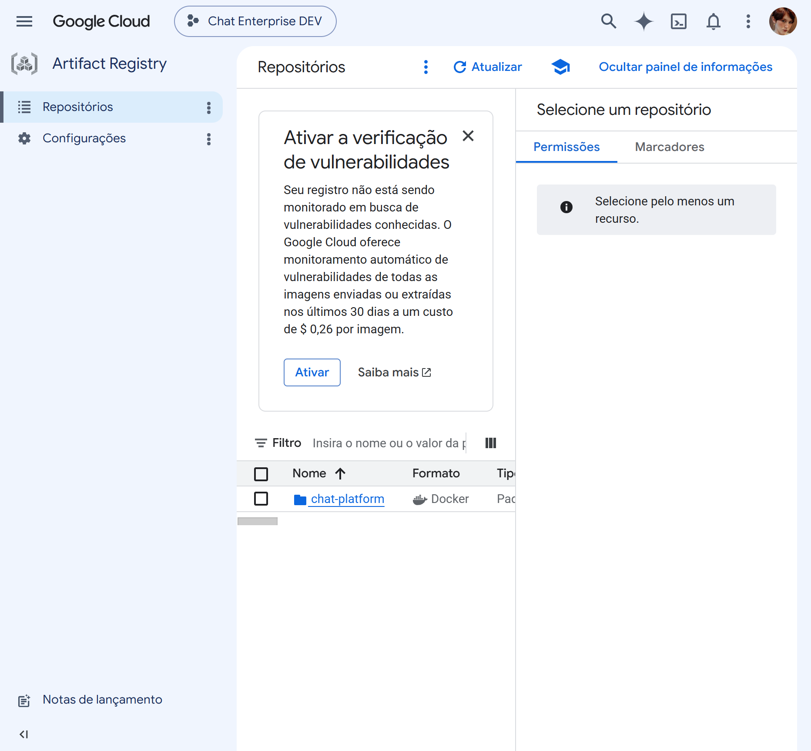
chat-platform criadoCada serviço tem seu Dockerfile. Ambos usam multi-stage build — um estágio compila, outro roda. Isso reduz o tamanho da imagem final de ~800MB para ~200MB.
# ============================================
# Stage 1: Build com Maven
# ============================================
FROM maven:3.9-eclipse-temurin-25 AS build
WORKDIR /app
# Copiar TODOS os POMs (Maven precisa resolver o reactor completo)
COPY pom.xml .
COPY shared-kernel/pom.xml shared-kernel/
COPY auth-service/pom.xml auth-service/
COPY chat-service/pom.xml chat-service/
# Baixar dependências (cached se POMs não mudarem)
RUN mvn dependency:go-offline -pl auth-service -am -B
# Copiar código-fonte
COPY shared-kernel/src shared-kernel/src
COPY auth-service/src auth-service/src
# Compilar (sem testes — já rodaram localmente)
RUN mvn package -pl auth-service -am -DskipTests -B
# ============================================
# Stage 2: Runtime mínimo
# ============================================
FROM eclipse-temurin:25-jre-alpine
WORKDIR /app
COPY --from=build /app/auth-service/target/*.jar app.jar
EXPOSE 8080
ENTRYPOINT ["java", "--enable-preview", "-jar", "app.jar"]O Dockerfile do chat-service é idêntico, trocando auth-service por chat-service.
| Linha | Decisão | Por quê |
|---|---|---|
maven:3.9-eclipse-temurin-25 |
Imagem base do build | Java 25 com Maven — mesma versão do projeto |
| Copiar POMs primeiro | Cache de dependências do Docker | Se os POMs não mudaram, o Docker reutiliza o cache do dependency:go-offline. Economiza minutos em builds subsequentes |
-pl auth-service -am |
Build seletivo | -pl = only this module, -am = also make dependencies (shared-kernel). Não compila o outro serviço |
eclipse-temurin:25-jre-alpine |
Imagem runtime mínima | Só JRE (sem JDK), Alpine Linux (~200MB vs ~800MB). Menos superfície de ataque, deploy mais rápido |
--enable-preview |
Flag da JVM | Obrigatória — o projeto usa preview features do Java 25. Sem ela, o app não inicia |
EXPOSE 8080 |
Porta do container | Cloud Run injeta a variável PORT e espera que o app escute nela. O Spring Boot lê via server.port=${PORT:8080} |
O cloudbuild.yaml fica na raiz do repositório e define 8 etapas sequenciais. Quando o Cloud Build detecta um push na develop, ele clona o repo e executa cada step em ordem.
- name: 'maven:3.9-eclipse-temurin-25'
entrypoint: 'mvn'
args: ['package', '-DskipTests', '-B']| Parâmetro | Explicação |
|---|---|
name |
Imagem Docker que executa o step. Aqui, Maven com Java 25 |
package |
Compila e gera os .jar de todos os módulos |
-DskipTests |
Pula testes — rodam localmente antes do push. No CI, queremos velocidade |
-B |
Batch mode — sem output interativo (logs mais limpos) |
package e não install? O install copia o jar para o ~/.m2 local — inútil num container efêmero. O package gera o jar no target/, que é tudo que precisamos.
- name: 'gcr.io/cloud-builders/docker'
args:
- 'build'
- '-f'
- 'auth-service/Dockerfile'
- '-t'
- '${_REGION}-docker.pkg.dev/${PROJECT_ID}/${_REPO}/auth-service:${SHORT_SHA}'
- '-t'
- '${_REGION}-docker.pkg.dev/${PROJECT_ID}/${_REPO}/auth-service:latest'
- '.'| Elemento | Explicação |
|---|---|
-f auth-service/Dockerfile |
Cada serviço tem seu Dockerfile. O contexto (.) é a raiz do monorepo, para que o COPY pom.xml funcione |
:${SHORT_SHA} |
Tag com os 7 primeiros caracteres do commit SHA. Permite rastrear qual commit gerou qual imagem |
:latest |
Tag conveniente para referência rápida. Sempre aponta para o build mais recente |
${PROJECT_ID} |
Variável built-in do Cloud Build — resolve para chat-enterprise-dev |
${_REGION}, ${_REPO} |
Substituições customizadas definidas no final do arquivo. Permite reutilizar o yaml para outros ambientes |
- name: 'gcr.io/cloud-builders/docker'
args: ['push', '--all-tags', '${_REGION}-docker.pkg.dev/${PROJECT_ID}/${_REPO}/auth-service']--all-tags publica tanto a tag :SHORT_SHA quanto a :latest de uma vez.
Aqui está a parte mais importante e mais sutil do pipeline. O deploy acontece em 3 steps porque o chat-service depende da URL do auth-service.
# Step 6: Deploy auth-service (PRIMEIRO)
- name: 'gcr.io/cloud-builders/gcloud'
args:
- 'run'
- 'deploy'
- 'auth-service'
- '--image=${_REGION}-docker.pkg.dev/${PROJECT_ID}/${_REPO}/auth-service:${SHORT_SHA}'
- '--region=${_REGION}'
- '--platform=managed'
- '--port=8080'
- '--memory=512Mi'
- '--cpu=1'
- '--min-instances=0'
- '--max-instances=2'
- '--set-env-vars=SPRING_PROFILES_ACTIVE=prod'
- '--set-secrets=SPRING_DATASOURCE_URL=auth-datasource-url:latest,...'
# Step 7: Capturar URL do auth-service
- name: 'gcr.io/cloud-builders/gcloud'
entrypoint: 'bash'
args:
- '-c'
- |
AUTH_URL=$(gcloud run services describe auth-service \
--region=${_REGION} --format='value(status.url)')
echo "AUTH_URL=$${AUTH_URL}" > /workspace/auth-url.env
# Step 8: Deploy chat-service (usa a URL do auth)
- name: 'gcr.io/cloud-builders/gcloud'
entrypoint: 'bash'
args:
- '-c'
- |
source /workspace/auth-url.env
gcloud run deploy chat-service \
--set-env-vars="JWT_JWKS_URI=$${AUTH_URL}/.well-known/jwks.json" \
.../.well-known/jwks.json). A URL do Cloud Run é dinâmica (https://auth-service-xxxxx-uc.a.run.app), então o Step 7 a captura e o Step 8 injeta como variável de ambiente no chat-service.
$$: No cloudbuild.yaml, $$ é um escape para $ literal. Sem isso, o Cloud Build tenta interpretar $AUTH_URL como uma substituição (e falha, porque não é uma variável built-in).
# Substituições customizáveis (podem ser override no trigger)
substitutions:
_REGION: 'us-central1'
_REPO: 'chat-platform'
# Imagens publicadas (para referência do Cloud Build)
images:
- '${_REGION}-docker.pkg.dev/${PROJECT_ID}/${_REPO}/auth-service:${SHORT_SHA}'
- '${_REGION}-docker.pkg.dev/${PROJECT_ID}/${_REPO}/chat-service:${SHORT_SHA}'
options:
logging: CLOUD_LOGGING_ONLY| Campo | Explicação |
|---|---|
substitutions |
Variáveis com prefixo _ que podem ser sobrescritas no trigger. Para prod, basta mudar _REPO para outro registry |
images |
Declara quais imagens o build produziu — aparece no console do Cloud Build para rastreabilidade |
CLOUD_LOGGING_ONLY |
Logs vão para o Cloud Logging (sem armazenar no bucket do Cloud Build — economia) |
O Cloud Build precisa de acesso ao repositório GitHub para detectar pushes e clonar o código. A 2ª geração usa o GitHub App do Cloud Build — mais segura que a 1ª geração (que usava OAuth pessoal com escopo amplo).
# Dar permissão ao Cloud Build para criar secrets (pré-requisito)
gcloud projects add-iam-policy-binding chat-enterprise-dev \
--member="serviceAccount:service-NNNNN@gcp-sa-cloudbuild.iam.gserviceaccount.com" \
--role="roles/secretmanager.admin"
# Criar a conexão (abre um link no terminal para autorizar no GitHub)
gcloud builds connections create github github-connection \
--region=us-central1
# Após autorizar, linkar o repositório específico
gcloud builds repositories create chat-enterprise \
--connection=github-connection \
--region=us-central1 \
--remote-uri=https://github.com/Mayara-Amorim/chat-enterprise.git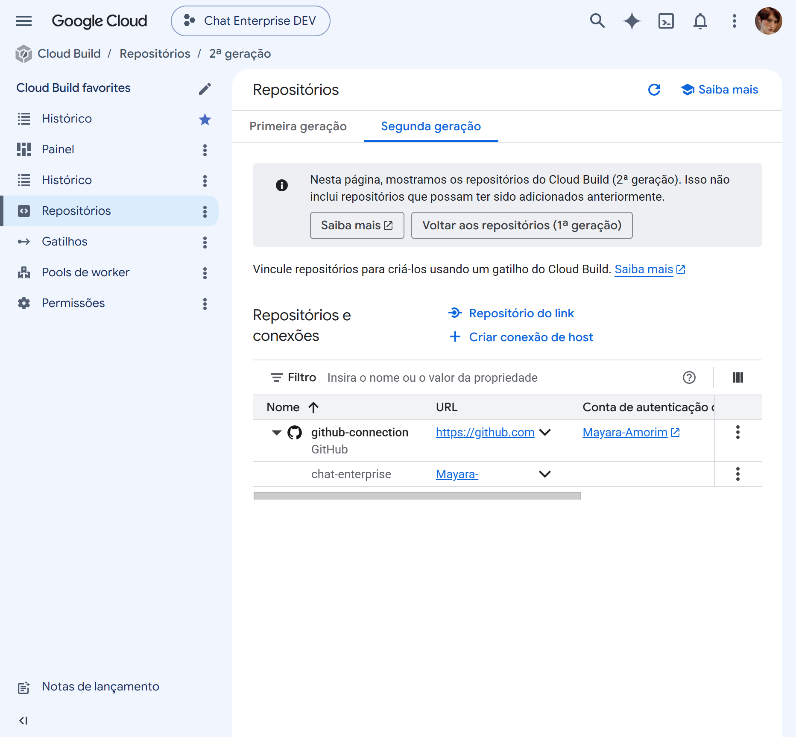
O trigger é o que liga "push no GitHub" a "executar o cloudbuild.yaml". Crie pelo console em Cloud Build → Gatilhos → Criar gatilho:
| Campo | Valor | Por quê |
|---|---|---|
| Nome | deploy-develop |
Nome descritivo — sabe o que faz e em qual branch |
| Região | us-central1 |
Mesma região do Artifact Registry e Cloud Run |
| Evento | Enviar para uma ramificação (push) | Dispara a cada push/merge na branch — não confundir com "tag" |
| Repositório | 2ª geração → github-connection → chat-enterprise |
A conexão criada no passo anterior |
| Branch | ^develop$ |
Regex exata — só a branch develop, não develop-fix nem my-develop |
| Configuração | Cloud Build config file → cloudbuild.yaml |
Aponta para o arquivo na raiz do repositório |
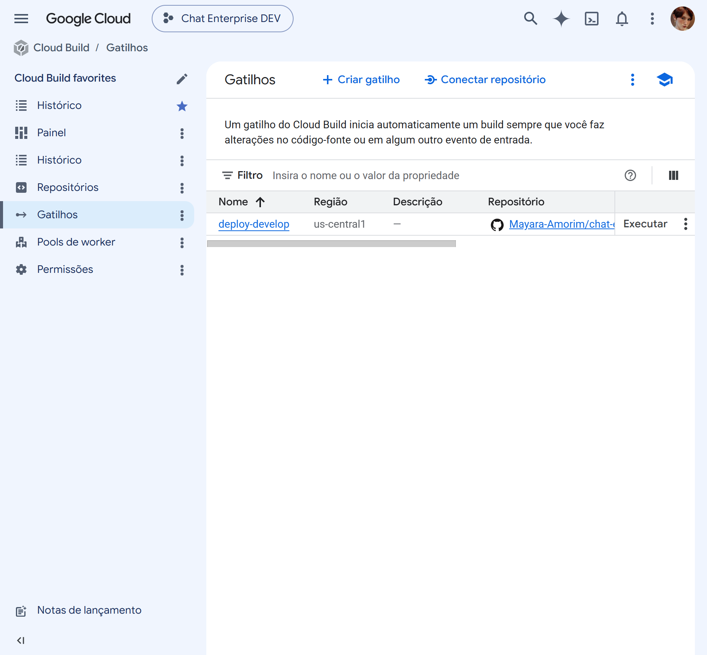
deploy-develop configuradoOs serviços recebem configurações sensíveis via --set-secrets no deploy. Cada secret precisa existir no Secret Manager antes do primeiro deploy.
# Exemplo: criar um secret
echo -n "jdbc:postgresql://host/auth_db?sslmode=require" | \
gcloud secrets create auth-datasource-url --data-file=-
# Dar permissão ao Cloud Run para ler os secrets
gcloud projects add-iam-policy-binding chat-enterprise-dev \
--member="serviceAccount:NNNNN-compute@developer.gserviceaccount.com" \
--role="roles/secretmanager.secretAccessor"| Serviço | Secret | Conteúdo |
|---|---|---|
| Auth | auth-datasource-url |
JDBC URL do PostgreSQL (Neon DB) |
| Auth | auth-datasource-username |
Usuário do banco |
| Auth | auth-datasource-password |
Senha do banco |
| Auth | auth-master-key |
Master key para criar tenants |
| Auth | rsa-private-key-base64 |
Chave RSA privada em Base64 (assina JWTs) |
| Chat | chat-datasource-url |
JDBC URL do PostgreSQL (Neon DB) |
| Chat | chat-datasource-username |
Usuário do banco |
| Chat | chat-datasource-password |
Senha do banco |
| Chat | kafka-bootstrap-servers |
Endereço do Confluent Cloud |
| Chat | kafka-sasl-jaas-config |
Credenciais SASL do Kafka |
| Chat | redis-url |
URL do Upstash Redis |
Com tudo configurado, faça um push na branch develop para disparar o pipeline:
# Push vazio para testar (sem alterar código)
git commit --allow-empty -m "test: trigger deploy"
git push origin developAcompanhe o build no console:
# Ver builds recentes
gcloud builds list --region=us-central1 --limit=3
# Ver log de um build específico
gcloud builds log BUILD_ID --region=us-central1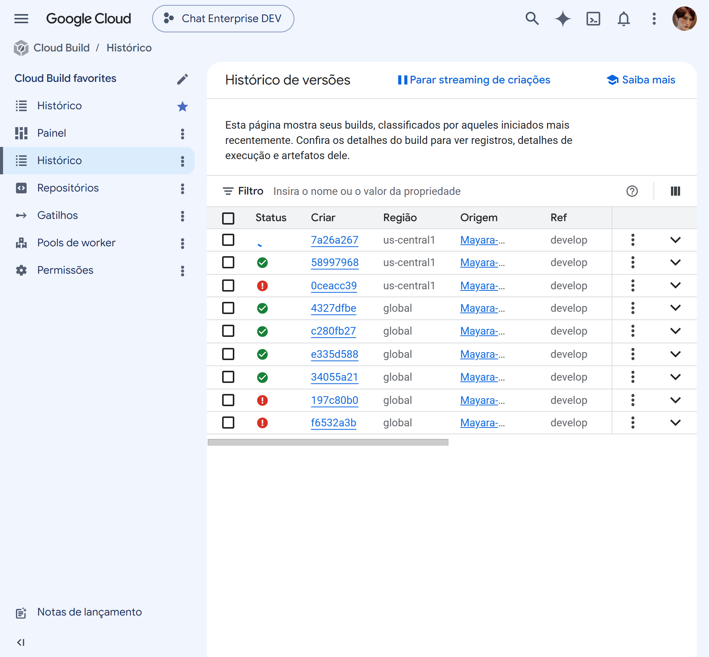
Após o pipeline rodar com sucesso, você tem:
| Recurso | O que é | Configuração |
|---|---|---|
| auth-service (Cloud Run) | Serviço de autenticação | 512Mi, 1 CPU, 0–2 instâncias |
| chat-service (Cloud Run) | Serviço de chat | 512Mi, 1 CPU, 0–2 instâncias |
| chat-platform (Artifact Registry) | Registry com imagens Docker | Tags: latest + SHA por build |
| deploy-develop (Cloud Build trigger) | Trigger automático | Push na develop → build + deploy |
| 11 secrets (Secret Manager) | Configs sensíveis | Injetados como env vars no Cloud Run |
| Config do Cloud Run | Valor | Por quê |
|---|---|---|
| Memória | 512Mi |
Suficiente para Spring Boot com JVM otimizada |
| CPU | 1 |
Ambiente dev — escala vertical se necessário |
| Min instances | 0 |
Escala a zero quando sem tráfego (custo zero em idle) |
| Max instances | 2 |
Limite de custo para ambiente dev |
| Porta | 8080 |
Padrão do Cloud Run — Spring Boot lê via ${PORT:8080} |
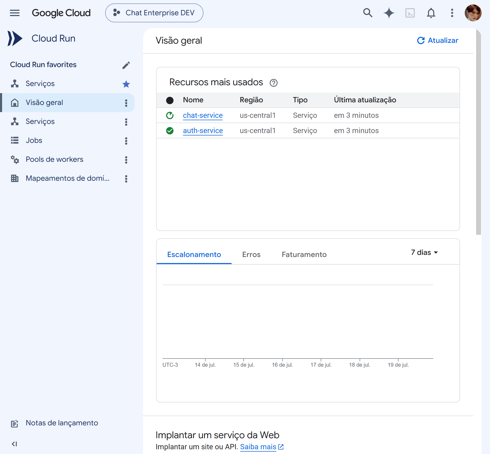
git push origin develop dispara automaticamente: compilação → build Docker → push das imagens → deploy no Cloud Run. Zero intervenção manual.